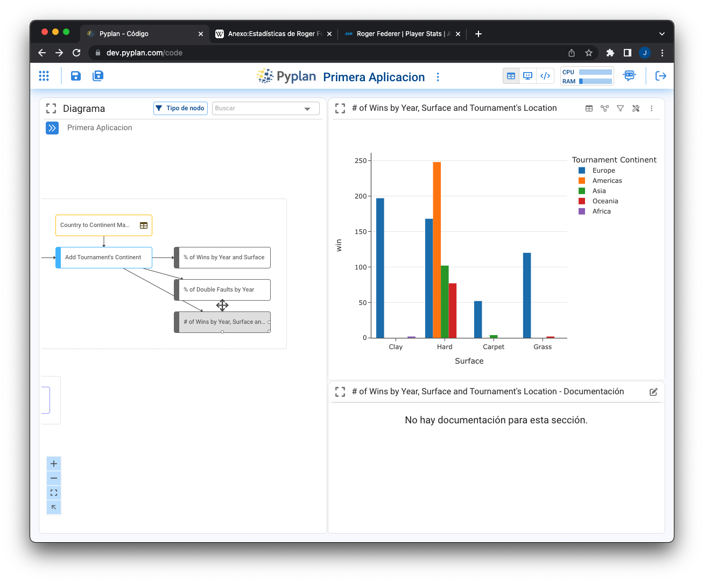

Ventana de Codificación
Contents
Ventana de Codificación#
Creación de la primera aplicación#
Pyplan es un ambiente de desarrollo integrado de aplicaciones pensado para usuarios sin conocimientos de programación. Es por esto que la forma de construir la lógica de calculo y procesamiento de las aplicaciones es a través de bloques o pasos de cálculo representados por nodos en un diagrama de influencia. Al hacer click en crear una aplicación en Pyplan nos aparece un cuadro de dialogo que nos permite optar entre crear una aplicación desde cero o a partir de un ejemplo.

Advertencia
(esta imagen de arriba debiera ser un Gif o incluir un link a un GIF paso a paso)
Eligiendo crear una aplicación de análisis de datos y luego seleccionando la visualización del código se llega a una ventana como la siguiente:

Elementos de la ventana de codificación#
Una vez hecho click en el icono de Código del menu principal se accede al diagrama de influencia:

Los elementos que constituyen esta sección de la plataforma son:
Diagrama de influencia: representación gráfica del procesamiento de datos hasta su transformación en salida
Tipos de visualización de nodos: Resultado | Codigo+Resultado | Codigo+Preview
Bot de ayuda: Robot asistente que interpreta lenguaje natural para responder a preguntas sobre el uso de Pyplan
Atajos de Navegación: Link a Pyplan Home y al Home de la aplicación accesibles al hacer click sobre el logo de Pyplan y el titulo de la aplicación respectivamente.
Propiedades de una aplicación: desplegables al hacer click en los tres puntos a la derecha del titulo de la app
Diagrama de influencia#
Es la representación gráfica del proceso de cálculo. Cada nodo representa un paso de calculo en el proceso de transformación de los datos. Un nodo se selecciona haciendo click sobre el mismo. Al hacer doble-click sobre un nodo, este es evaluado y su resultado se muestra a pantalla completa de acuerdo a su configuración de visualización predeterminada. Los vínculos (flechas) entre nodos son generados automáticamente el invocar un nodo dentro de la definición de otro.
Advertencia
(aquí debiéramos incluir un link a una de las lecciones que te muestren paso a paso esta sección)
Características de un Nodo#
Un nodo es la unidad mínima de construcción del proceso de cálculo. Para agregar un nodo se arrastra el mismo sobre el diagrama.
Cuenta con las siguientes propiedades:
Titulo del nodo#
Es el texto que se visualiza dentro del nodo en el diagrama
Id del nodo#
Es el identificador del nodo, es la forma en la que un nodo es invocado en la definición de otro nodo. El Id del nodo se genera automáticamente a partir del titulo, pero puede ser cambiado por el usuario.
Unidades#
En caso de un nodo contener una medida única, es posible indicar su unidad la que será mostrada entre paréntesis al lado del titulo al momento de mostrar los resultados del nodo. Vale destacar que las unidades solo se incluyen para ser visualizadas no formando parte del calculo de resultados.

Definición#
Es la operación de transformación ejecutada al evaluar un nodo. Su código esta escrito en lenguaje Python. Termina con la definición de su resultado «result=»
Vista Previa#
Es la descripción técnica de la salida del proceso de cálculo.
Resultado#
Es el resultado que surge de ejecutar el código de la definición. Este resultado puede visualizarse de forma gráfica o de tabla.
Documentación#
Es el texto que describe conceptualmente cada paso de cálculo y se despliega en la parte inferior de la vista de resultados.
Entradas#
listado de nodos utilizados en la definición de un nodo
Salidas#
listado de nodos que utilizan el resultado del nodo seleccionado

A estas propiedades de nodo se accede haciendo click y seleccionándolo. Haciendo doble-click evaluándolo o haciendo click con el botón derecho del mouse una vez seleccionado el nodo.
Tipos de Nodo#
Existen diferentes tipos de nodos para diferentes propósitos. Sus funcionalidades han sido diseñadas para facilitar la definición de los parámetros necesarios para su ejecución.
Variable#
Los nodos de tipo variable son los más utilizados dado que tienen la función de contener un proceso de calculo genérico. Son de color azul inicialmente. Este color cambia a gris en caso que un nodo no tenga salidas y se lo considera un reporte. Por otra parte, cambia a un color rojo en caso que las salidas del nodo se encuentren fuera del modulo al que pertenece.
Lectura de datos#
Nodo que al arrastrarlo despliega un asistente para conectarse a distintas fuentes de datos
Entrada de datos#
Nodo que permite crear un proceso de entrada de datos manuales.

Una vez elegido el tipo de entrada de datos se despliega un asistente para su configuración. En este caso se muestra el asistente para crear una Tabla de entrada de datos.
Botón#
El botón es un nodo especial que permite ejecutar acciones sobre los nodos.
Indice#
El nodo indice es la forma en que Pyplan almacena las dimensiones que son utilizadas a traves de todo el proceso de calculo. Su definición conduce a la determinación de una lista de elementos que constituyen la dimensión. Tienen un funcionamiento particular cuando se los incluye en interfaces.
Texto#
El cuadro de texto es un elemento de construcción del diagrama con fines solamente de organización del diagrama de influencia.
Módulo#
Es un tipo de nodo especial que contiene nodos dentro de el. Haciendo doble-click sobre un modulo se entra al mismo. Los módulos pueden estar anidados indefinidamente.
Operaciones en el Diagrama de Influencia#
Inspección de propiedades de nodos#
Al seleccionar un nodo, haciendo click con el boton derecho del mouse, se despliega una ventana de propiedades del nodo.
Visualización de resultados#
Tablas y gráficos